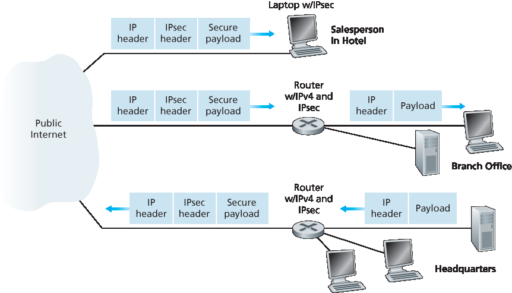
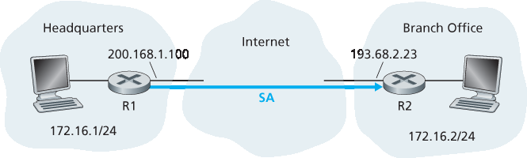
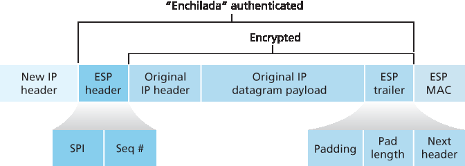

8.7 网络层安全: IPsec 和虚拟专用网络#
8.7 Network-Layer Security: IPsec and Virtual Private Networks
The IP security protocol, more commonly known as IPsec, provides security at the network layer. IPsec secures IP datagrams between any two network-layer entities, including hosts and routers. As we will soon describe, many institutions (corporations, government branches, non-profit organizations, and so on) use IPsec to create virtual private networks (VPNs) that run over the public Internet.
Before getting into the specifics of IPsec, let’s step back and consider what it means to provide confidentiality at the network layer. With network-layer confidentiality between a pair of network entities (for example, between two routers, between two hosts, or between a router and a host), the sending entity encrypts the payloads of all the datagrams it sends to the receiving entity. The encrypted payload could be a TCP segment, a UDP segment, an ICMP message, and so on. If such a network-layer service were in place, all data sent from one entity to the other—including e-mail, Web pages, TCP handshake messages, and management messages (such as ICMP and SNMP)—would be hidden from any third party that might be sniffing the network. For this reason, network-layer security is said to provide “blanket coverage.”
In addition to confidentiality, a network-layer security protocol could potentially provide other security services. For example, it could provide source authentication, so that the receiving entity can verify the source of the secured datagram. A network-layer security protocol could provide data integrity, so that the receiving entity can check for any tampering of the datagram that may have occurred while the datagram was in transit. A network-layer security service could also provide replay-attack prevention, meaning that Bob could detect any duplicate datagrams that an attacker might insert. We will soon see that IPsec indeed provides mechanisms for all these security services, that is, for confidentiality, source authentication, data integrity, and replay-attack prevention.
8.7.1 IPsec 和虚拟专用网络 (VPNs)#
8.7.1 IPsec and Virtual Private Networks (VPNs)
An institution that extends over multiple geographical regions often desires its own IP network, so that its hosts and servers can send data to each other in a secure and confidential manner. To achieve this goal, the institution could actually deploy a stand-alone physical network—including routers, links, and a DNS infrastructure—that is completely separate from the public Internet. Such a disjoint network, dedicated to a particular institution, is called a private network. Not surprisingly, a private network can be very costly, as the institution needs to purchase, install, and maintain its own physical network infrastructure.
Instead of deploying and maintaining a private network, many institutions today create VPNs over the existing public Internet. With a VPN, the institution’s inter-office traffic is sent over the public Internet rather than over a physically independent network. But to provide confidentiality, the inter-office traffic is encrypted before it enters the public Internet. A simple example of a VPN is shown in Figure 8.27. Here the institution consists of a headquarters, a branch office, and traveling salespersons that typically access the Internet from their hotel rooms. (There is only one salesperson shown in the figure.) In this VPN, whenever two hosts within headquarters send IP datagrams to each other or whenever two hosts within the branch office want to communicate, they use good-old vanilla IPv4 (that is, without IPsec services). However, when two of the institution’s hosts communicate over a path that traverses the public Internet, the traffic is encrypted before it enters the Internet.

Figure 8.27 Virtual private network (VPN)
To get a feel for how a VPN works, let’s walk through a simple example in the context of Figure 8.27. When a host in headquarters sends an IP datagram to a salesperson in a hotel, the gateway router in headquarters converts the vanilla IPv4 datagram into an IPsec datagram and then forwards this IPsec datagram into the Internet. This IPsec datagram actually has a traditional IPv4 header, so that the routers in the public Internet process the datagram as if it were an ordinary IPv4 datagram—to them, the datagram is a perfectly ordinary datagram. But, as shown Figure 8.27, the payload of the IPsec datagram includes an IPsec header, which is used for IPsec processing; furthermore, the payload of the IPsec datagram is encrypted. When the IPsec datagram arrives at the salesperson’s laptop, the OS in the laptop decrypts the payload (and provides other security services, such as verifying data integrity) and passes the unencrypted payload to the upper-layer protocol (for example, to TCP or UDP).
We have just given a high-level overview of how an institution can employ IPsec to create a VPN. To see the forest through the trees, we have brushed aside many important details. Let’s now take a closer look.
8.7.2 AH 和 ESP 协议#
8.7.2 The AH and ESP Protocols
IPsec is a rather complex animal—it is defined in more than a dozen RFCs. Two important RFCs are RFC 4301, which describes the overall IP security architecture, and RFC 6071, which provides an overview of the IPsec protocol suite. Our goal in this textbook, as usual, is not simply to re-hash the dry and arcane RFCs, but instead take a more operational and pedagogic approach to describing the protocols.
In the IPsec protocol suite, there are two principal protocols: the Authentication Header (AH) protocol and the Encapsulation Security Payload (ESP) protocol. When a source IPsec entity (typically a host or a router) sends secure datagrams to a destination entity (also a host or a router), it does so with either the AH protocol or the ESP protocol. The AH protocol provides source authentication and data integrity but does not provide confidentiality. The ESP protocol provides source authentication, data integrity, and confidentiality. Because confidentiality is often critical for VPNs and other IPsec applications, the ESP protocol is much more widely used than the AH protocol. In order to de-mystify IPsec and avoid much of its complication, we will henceforth focus exclusively on the ESP protocol. Readers wanting to learn also about the AH protocol are encouraged to explore the RFCs and other online resources.
8.7.3 安全关联#
8.7.3 Security Associations
IPsec datagrams are sent between pairs of network entities, such as between two hosts, between two routers, or between a host and router. Before sending IPsec datagrams from source entity to destination entity, the source and destination entities create a network-layer logical connection. This logical connection is called a security association (SA). An SA is a simplex logical connection; that is, it is unidirectional from source to destination. If both entities want to send secure datagrams to each other, then two SAs (that is, two logical connections) need to be established, one in each direction.
For example, consider once again the institutional VPN in Figure 8.27. This institution consists of a headquarters office, a branch office and, say, n traveling salespersons. For the sake of example, let’s suppose that there is bi-directional IPsec traffic between headquarters and the branch office and bi- directional IPsec traffic between headquarters and the salespersons. In this VPN, how many SAs are there? To answer this question, note that there are two SAs between the headquarters gateway router and the branch-office gateway router (one in each direction); for each salesperson’s laptop, there are two SAs between the headquarters gateway router and the laptop (again, one in each direction). So, in total, there are (2+2n) SAs. Keep in mind, however, that not all traffic sent into the Internet by the gateway routers or by the laptops will be IPsec secured. For example, a host in headquarters may want to access a Web server (such as Amazon or Google) in the public Internet. Thus, the gateway router (and the laptops) will emit into the Internet both vanilla IPv4 datagrams and secured IPsec datagrams.

Figure 8.28 Security association (SA) from R1 to R2
Let’s now take a look “inside” an SA. To make the discussion tangible and concrete, let’s do this in the context of an SA from router R1 to router R2 in Figure 8.28. (You can think of Router R1 as the headquarters gateway router and Router R2 as the branch office gateway router from Figure 8.27.) Router R1 will maintain state information about this SA, which will include:
A 32-bit identifier for the SA, called the Security Parameter Index (SPI)
The origin interface of the SA (in this case 200.168.1.100) and the destination interface of the SA (in this case 193.68.2.23)
The type of encryption to be used (for example, 3DES with CBC) The encryption key
The type of integrity check (for example, HMAC with MD5)
The authentication key
Whenever router R1 needs to construct an IPsec datagram for forwarding over this SA, it accesses this state information to determine how it should authenticate and encrypt the datagram. Similarly, router R2 will maintain the same state information for this SA and will use this information to authenticate and decrypt any IPsec datagram that arrives from the SA.
An IPsec entity (router or host) often maintains state information for many SAs. For example, in the VPN example in Figure 8.27 with n salespersons, the headquarters gateway router maintains state information for (2+2n) SAs. An IPsec entity stores the state information for all of its SAs in its Security Association Database (SAD), which is a data structure in the entity’s OS kernel.
8.7.4 IPsec 数据报#
8.7.4 The IPsec Datagram
Having now described SAs, we can now describe the actual IPsec datagram. IPsec has two different packet forms, one for the so-called tunnel mode and the other for the so-called transport mode. The tunnel mode, being more appropriate for VPNs, is more widely deployed than the transport mode. In order to further de-mystify IPsec and avoid much of its complication, we henceforth focus exclusively on the tunnel mode. Once you have a solid grip on the tunnel mode, you should be able to easily learn about the transport mode on your own.

Figure 8.29 IPsec datagram format
The packet format of the IPsec datagram is shown in Figure 8.29. You might think that packet formats are boring and insipid, but we will soon see that the IPsec datagram actually looks and tastes like a popular Tex-Mex delicacy! Let’s examine the IPsec fields in the context of Figure 8.28. Suppose router R1 receives an ordinary IPv4 datagram from host 172.16.1.17 (in the headquarters network) which is destined to host 172.16.2.48 (in the branch-office network). Router R1 uses the following recipe to convert this “original IPv4 datagram” into an IPsec datagram:
Appends to the back of the original IPv4 datagram (which includes the original header fields!) an “ESP trailer” field
Encrypts the result using the algorithm and key specified by the SA
Appends to the front of this encrypted quantity a field called “ESP header”; the resulting package is called the “enchilada”
Creates an authentication MAC over the whole enchilada using the algorithm and key specified in the SA
Appends the MAC to the back of the enchilada forming the payload
Finally, creates a brand new IP header with all the classic IPv4 header fields (together normally 20 bytes long), which it appends before the payload
Note that the resulting IPsec datagram is a bona fide IPv4 datagram, with the traditional IPv4 header fields followed by a payload. But in this case, the payload contains an ESP header, the original IP datagram, an ESP trailer, and an ESP authentication field (with the original datagram and ESP trailer encrypted). The original IP datagram has 172.16.1.17 for the source IP address and 172.16.2.48 for the destination IP address. Because the IPsec datagram includes the original IP datagram, these addresses are included (and encrypted) as part of the payload of the IPsec packet. But what about the source and destination IP addresses that are in the new IP header, that is, in the left-most header of the IPsec datagram? As you might expect, they are set to the source and destination router interfaces at the two ends of the tunnels, namely, 200.168.1.100 and 193.68.2.23. Also, the protocol number in this new IPv4 header field is not set to that of TCP, UDP, or SMTP, but instead to 50, designating that this is an IPsec datagram using the ESP protocol.
After R1 sends the IPsec datagram into the public Internet, it will pass through many routers before reaching R2. Each of these routers will process the datagram as if it were an ordinary datagram—they are completely oblivious to the fact that the datagram is carrying IPsec-encrypted data. For these public Internet routers, because the destination IP address in the outer header is R2, the ultimate destination of the datagram is R2.
Having walked through an example of how an IPsec datagram is constructed, let’s now take a closer look at the ingredients in the enchilada. We see in Figure 8.29 that the ESP trailer consists of three fields: padding; pad length; and next header. Recall that block ciphers require the message to be encrypted to be an integer multiple of the block length. Padding (consisting of meaningless bytes) is used so that when added to the original datagram (along with the pad length and next header fields), the resulting “message” is an integer number of blocks. The pad-length field indicates to the receiving entity how much padding was inserted (and thus needs to be removed). The next header identifies the type (e.g., UDP) of data contained in the payload-data field. The payload data (typically the original IP datagram) and the ESP trailer are concatenated and then encrypted.
Appended to the front of this encrypted unit is the ESP header, which is sent in the clear and consists of two fields: the SPI and the sequence number field. The SPI indicates to the receiving entity the SA to which the datagram belongs; the receiving entity can then index its SAD with the SPI to determine the appropriate authentication/decryption algorithms and keys. The sequence number field is used to defend against replay attacks.
The sending entity also appends an authentication MAC. As stated earlier, the sending entity calculates a MAC over the whole enchilada (consisting of the ESP header, the original IP datagram, and the ESP trailer—with the datagram and trailer being encrypted). Recall that to calculate a MAC, the sender appends a secret MAC key to the enchilada and then calculates a fixed-length hash of the result.
When R2 receives the IPsec datagram, R2 observes that the destination IP address of the datagram is R2 itself. R2 therefore processes the datagram. Because the protocol field (in the left-most IP header) is 50, R2 sees that it should apply IPsec ESP processing to the datagram. First, peering into the enchilada, R2 uses the SPI to determine to which SA the datagram belongs. Second, it calculates the MAC of the enchilada and verifies that the MAC is consistent with the value in the ESP MAC field. If it is, it knows that the enchilada comes from R1 and has not been tampered with. Third, it checks the sequence-number field to verify that the datagram is fresh (and not a replayed datagram). Fourth, it decrypts the encrypted unit using the decryption algorithm and key associated with the SA. Fifth, it removes padding and extracts the original, vanilla IP datagram. And finally, sixth, it forwards the original datagram into the branch office network toward its ultimate destination. Whew, what a complicated recipe, huh? Well no one ever said that preparing and unraveling an enchilada was easy!
There is actually another important subtlety that needs to be addressed. It centers on the following question: When R1 receives an (unsecured) datagram from a host in the headquarters network, and that datagram is destined to some destination IP address outside of headquarters, how does R1 know whether it should be converted to an IPsec datagram? And if it is to be processed by IPsec, how does R1 know which SA (of many SAs in its SAD) should be used to construct the IPsec datagram? The problem is solved as follows. Along with a SAD, the IPsec entity also maintains another data structure called the Security Policy Database (SPD). The SPD indicates what types of datagrams (as a function of source IP address, destination IP address, and protocol type) are to be IPsec processed; and for those that are to be IPsec processed, which SA should be used. In a sense, the information in a SPD indicates “what” to do with an arriving datagram; the information in the SAD indicates “how” to do it.
Summary of IPsec Services#
So what services does IPsec provide, exactly? Let us examine these services from the perspective of an attacker, say Trudy, who is a woman-in-the-middle, sitting somewhere on the path between R1 and R2 in Figure 8.28. Assume throughout this discussion that Trudy does not know the authentication and encryption keys used by the SA. What can and cannot Trudy do? First, Trudy cannot see the original datagram. If fact, not only is the data in the original datagram hidden from Trudy, but so is the protocol number, the source IP address, and the destination IP address. For datagrams sent over the SA, Trudy only knows that the datagram originated from some host in 172.16.1.0/24 and is destined to some host in 172.16.2.0/24. She does not know if it is carrying TCP, UDP, or ICMP data; she does not know if it is carrying HTTP, SMTP, or some other type of application data. This confidentiality thus goes a lot farther than SSL. Second, suppose Trudy tries to tamper with a datagram in the SA by flipping some of its bits. When this tampered datagram arrives at R2, it will fail the integrity check (using the MAC), thwarting Trudy’s vicious attempts once again. Third, suppose Trudy tries to masquerade as R1, creating a IPsec datagram with source 200.168.1.100 and destination 193.68.2.23. Trudy’s attack will be futile, as this datagram will again fail the integrity check at R2. Finally, because IPsec includes sequence numbers, Trudy will not be able create a successful replay attack. In summary, as claimed at the beginning of this section, IPsec provides—between any pair of devices that process packets through the network layer— confidentiality, source authentication, data integrity, and replay-attack prevention.
8.7.5 IKE: IPsec 中的密钥管理#
8.7.5 IKE: Key Management in IPsec
When a VPN has a small number of end points (for example, just two routers as in Figure 8.28), the network administrator can manually enter the SA information (encryption/authentication algorithms and keys, and the SPIs) into the SADs of the endpoints. Such “manual keying” is clearly impractical for a large VPN, which may consist of hundreds or even thousands of IPsec routers and hosts. Large, geographically distributed deployments require an automated mechanism for creating the SAs. IPsec does this with the Internet Key Exchange (IKE) protocol, specified in RFC 5996.
IKE has some similarities with the handshake in SSL (see Section 8.6). Each IPsec entity has a certificate, which includes the entity’s public key. As with SSL, the IKE protocol has the two entities exchange certificates, negotiate authentication and encryption algorithms, and securely exchange key material for creating session keys in the IPsec SAs. Unlike SSL, IKE employs two phases to carry out these tasks.
Let’s investigate these two phases in the context of two routers, R1 and R2, in Figure 8.28. The first phase consists of two exchanges of message pairs between R1 and R2:
During the first exchange of messages, the two sides use Diffie-Hellman (see Homework Problems) to create a bi-directional IKE SA between the routers. To keep us all confused, this bi-directional IKE SA is entirely different from the IPsec SAs discussed in Sections 8.6.3 and 8.6.4. The IKE SA provides an authenticated and encrypted channel between the two routers. During this first message-pair exchange, keys are established for encryption and authentication for the IKE SA. Also established is a master secret that will be used to compute IPSec SA keys later in phase 2. Observe that during this first step, RSA public and private keys are not used. In particular, neither R1 nor R2 reveals its identity by signing a message with its private key.
During the second exchange of messages, both sides reveal their identity to each other by signing their messages. However, the identities are not revealed to a passive sniffer, since the messages are sent over the secured IKE SA channel. Also during this phase, the two sides negotiate the IPsec encryption and authentication algorithms to be employed by the IPsec SAs.
In phase 2 of IKE, the two sides create an SA in each direction. At the end of phase 2, the encryption and authentication session keys are established on both sides for the two SAs. The two sides can then use the SAs to send secured datagrams, as described in Sections 8.7.3 and 8.7.4. The primary motivation for having two phases in IKE is computational cost—since the second phase doesn’t involve any public-key cryptography, IKE can generate a large number of SAs between the two IPsec entities with relatively little computational cost.